Aufnahmen der tatsächlich umgesetzten App mit synthetischen Nachrichten. Postfach, Nachricht, Formular und Filter verwenden den gemeinsamen mobilen Aufbau. Lange Ansichten sind scrollbar; ein Antippen öffnet das Einzelbild.
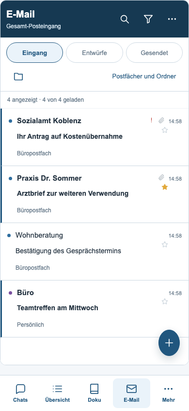
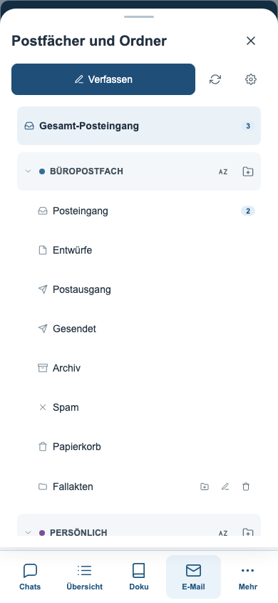
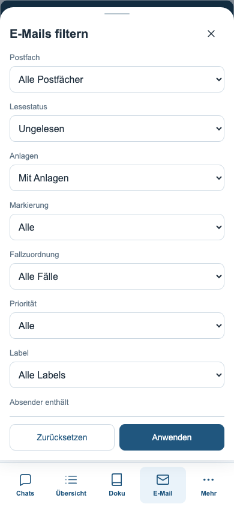
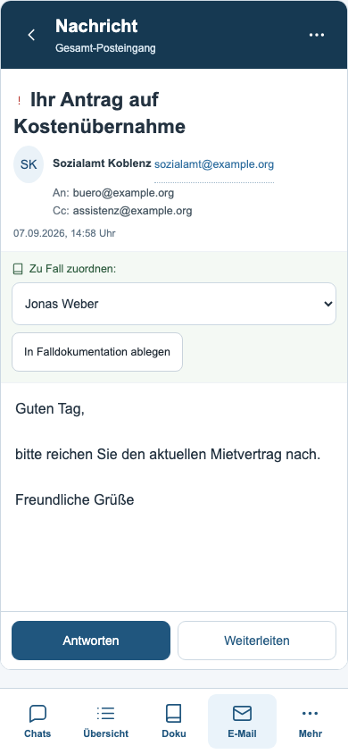
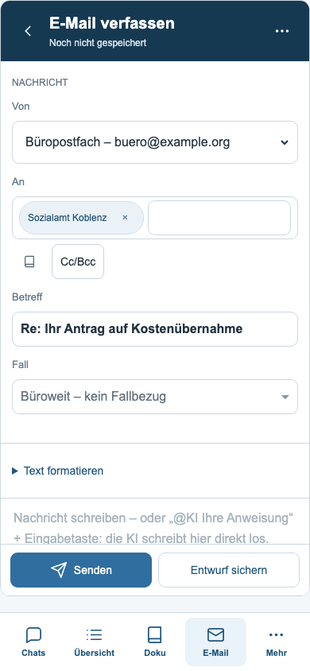
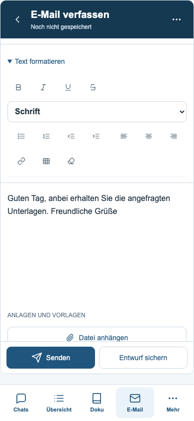
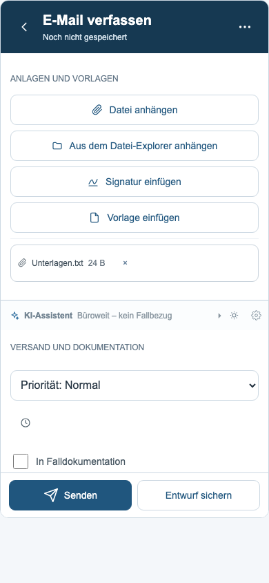
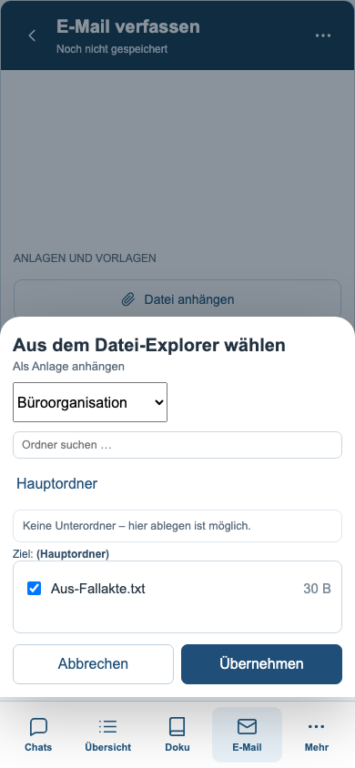
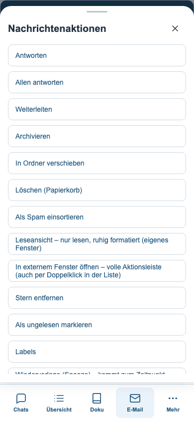
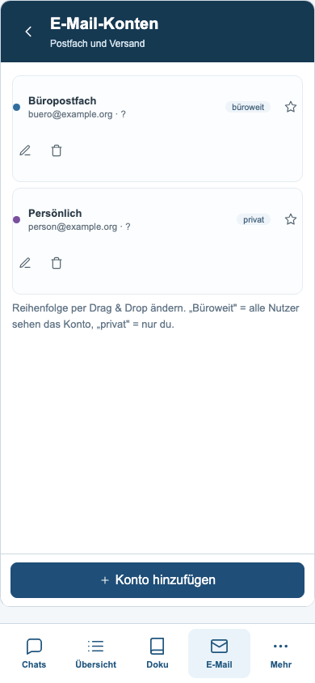
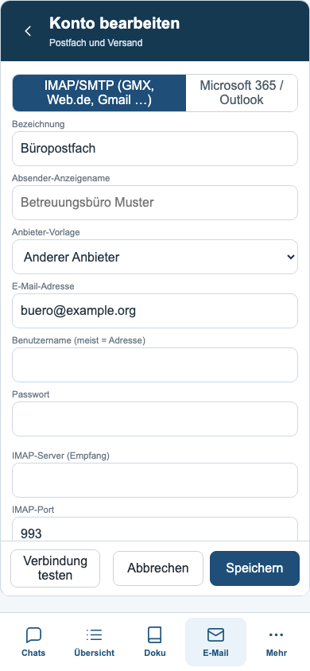
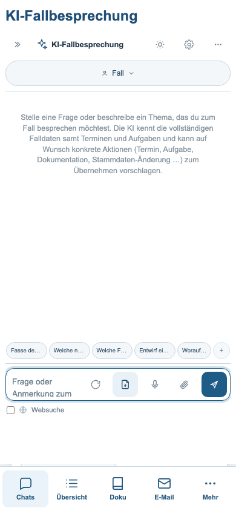
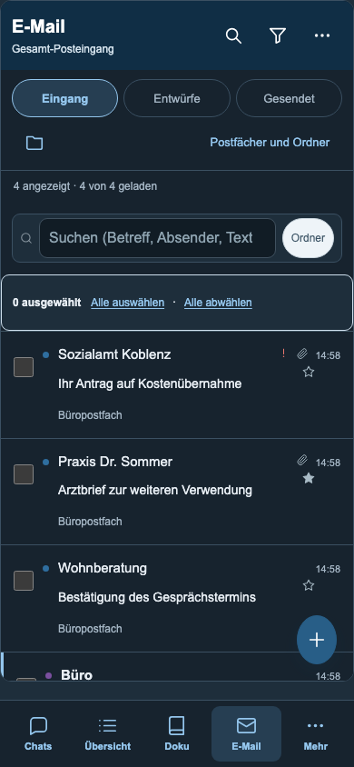
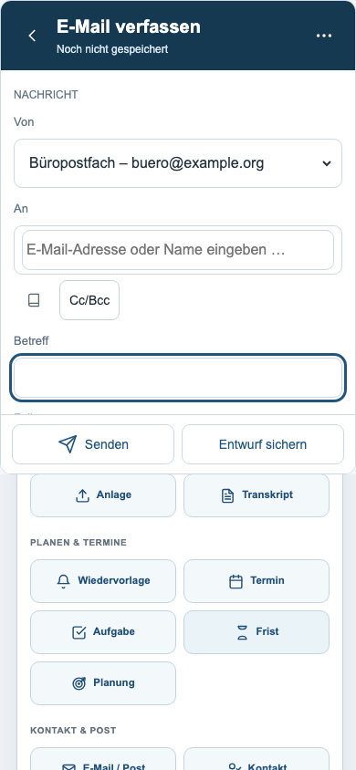